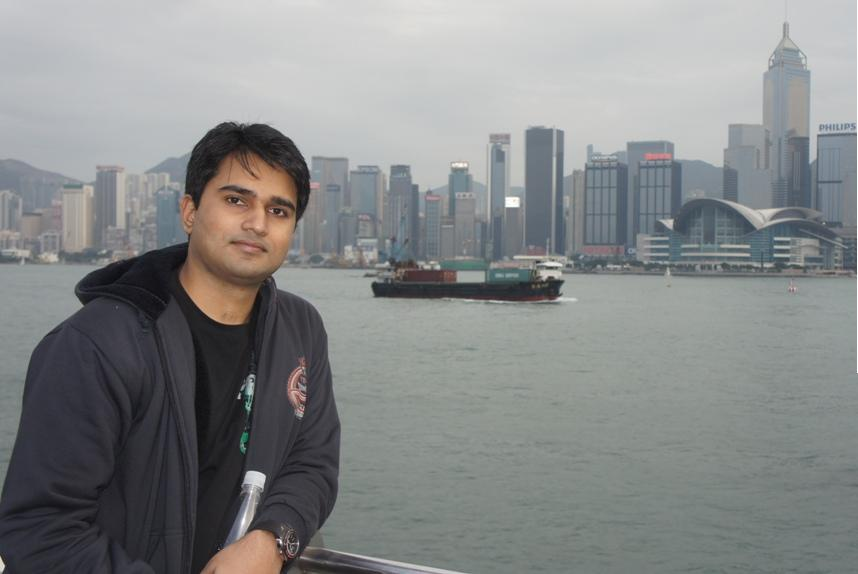

Sunil Jaiswal
Multimedia Technology Research Center
Department of Electronics & Computer Engineering (ECE),
School of Engineering (SENG), HKUST
Biography
I am currently a Ph.D. candidate in Hong Kong University of Science & Technology (HKUST). My supervisor is Prof. Matthew McKay and Prof. Oscar Au in ECE Dept of the University. Since 2012, I am an active member of Multimedia Technology Research Center. My research interests includes Image/Video processing, color image processing. I am currently a visiting scholar in the Visual Analytics and Imaging lab in Stony Brook University, New York and SUNY Korea with the host of Prof. Klaus Mueller.
I completed my degree of Bachelors of Technology (Undergraduate) in Electronics and Communication Engineering, from The LNM Institute of Information Technology (LNMIIT), Jaipur, India in 2012.
During my bachelor degree, I worked as a Research Assistant in Center for Biomedical Image Analysis (CBIA) at Masaryk University, Czech Republic under the supervision of Dr. Michal Kozubek and Dr.David Svoboda. My Topic of research was 3D BioMedical imaging. I also worked with Prof. Anil K. Tiwari at IIT Jodhpur (IIT J) where my topic of research was related to image interpolation, image compression. My CV can be accessed from here : [CV].